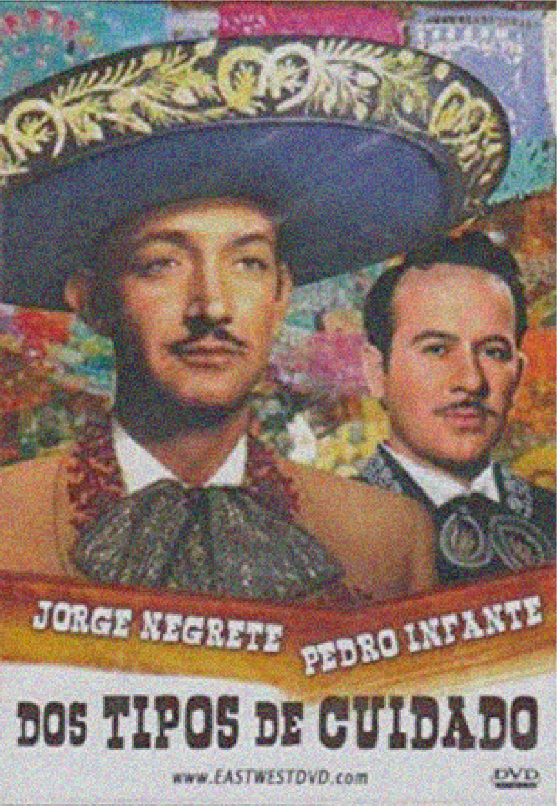

"Dos tipos de cuidado"
narra la historia de dos amigos, Jorge Bueno y Pedro Malo (puntos extra por
la creatividad de los apellidos) que tras cierto suceso (una traición, se podría decir), acaban en malos términos.
En el transcurso de la película vemos lo resentidos que están uno con otro, y cómo su rivalidad
desemboca en una serie de divertidos malentendidos que mantedrán al público muy entretenido.
Esta peli trata sobre amistad, lealtad, amor, y toca temas incluso más serios como el abuso sexual y
estigmas sociales de aquel entonces.
"Dos tipos de cuidado"
narra la historia de dos amigos, Jorge Bueno y Pedro Malo (puntos extra por
la creatividad de los apellidos) que tras cierto suceso (una traición, se podría decir), acaban en malos términos.
En el transcurso de la película vemos lo resentidos que están uno con otro, y cómo su rivalidad
desemboca en una serie de divertidos malentendidos que mantedrán al público muy entretenido.
Esta peli trata sobre amistad, lealtad, amor, y toca temas incluso más serios como el abuso sexual y
estigmas sociales de aquel entonces.
El que toque temas que siguen siendo relevantes hoy día creo que la hace una película de cierto modo
"actual". También me gusta que los temas más controversiales los toque de forma muy objetiva; la verdad,
me parece hasta un poco raro dada la época.
Otro de los puntos fuertes es, obviamente, la música. Pedro Infante y Jorge Negrete fueron
artistas increíbles: excelentes actores, y cantantes ni se diga. Es una experiencia bien preciosa
ver a dos hombres tan talentosos e importantes actuando y cantando juntos.